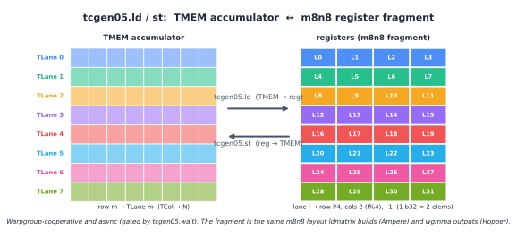

特殊存储器：TMEM#
概述
TMEM 是
tcgen05使用的仅 Blackwell 的内存空间。它是每个 SM 上的二维暂存器，具有 128 Lane 行和最多 512 Col 列。tcgen05.mma将其累加器写入 TMEM。块缩放 MMA 还使用 TMEM 作为缩放因子。TMEM 由 Lane 和 Col 寻址。在 TIRx layout 表示法中，这两个硬件轴被写为
TLane和TCol。TMEM 不像寄存器那样被分配。 kernel 必须以 32 列为单位显式分配和释放它。
普通共享内存加载和存储无法访问 TMEM。数据通过专用异步
tcgen05指令在 TMEM、寄存器和共享内存之间移动。
在 Hopper 和更早的 GPUs 上，Tensor Core (Tensor Cores: tcgen05) 累加器位于寄存器中。这个模型很容易推理。 MMA 指令生成一个寄存器片段，kernel 在整个计算阶段保持该片段有效，epilogue 随后读取它、转换它并存储结果。
问题在于套准压力。寄存器是每个 thread 的固定资源。随着 MMA 块变大，累加器片段也会变大。在某些时候，累加器开始挤出 thread 需要保存的其他值。较大的块有利于 Tensor Core 吞吐量，但将整个累加器保留在寄存器中会使这些较大的块更难使用。
Blackwell 更改了这部分数据路径。 tcgen05 的累加器不必在整个计算阶段保留在寄存器中。相反，tcgen05.mma 将累加器写入 Tensor Memory 或 TMEM。 TMEM 是早期 NVIDIA GPUs 所没有的内存空间。它是 SM 上的二维暂存器，形状为 128 行行、最多 512 列列，使用它的范围仅限于 CTA。
额外的内存空间使 Blackwell 支持更大的 Tensor Core 块，而无需强制将整个累加器放入每个 thread 寄存器中。但 TMEM 并不像寄存器那样自动。编译器并不简单地将其作为普通的寄存器存储来分发。 kernel 必须分配 TMEM，使用正确的 layout 对其进行寻址，使用正确的指令将数据移入和移出，并在 CTA 完成时释放它。
二维地址空间#
TMEM 不是平面字节数组。它是一个二维地址空间。硬件将其两个坐标命名为 Lane 和 Col。 Lane 行数为 128，Col 列数最多为 512。每个 Col 都是一个 32 位列。
该形状很重要，因为 tcgen05.mma 使用这种二维结构将其累加器写入 TMEM。 TMEM 位置由 Lane 坐标和 Col 坐标描述，而不是由单个共享内存类型的字节偏移量描述。
当 kernel 在 TIRx 中声明 TMEM 缓冲区时，它会在这两个硬件坐标上为缓冲区提供 layout。在 layout 表示法 (数据 layout 及其表示法) 中，我们将 TMEM Lane 轴写为 TLane，将 TMEM Col 轴写为 TCol。这些名称并不意味着取代官方硬件术语。它们是 layout 轴名称，使 TMEM 尺寸在 DSL 内明确。
例如，累加器 tile 可以写为：
S[(128, N) : (1@TLane, 1@TCol)]
这表示该 tile 沿硬件 lane 维度有 128 行，沿硬件列维度有 N 列。在 layout 表示法中，这两个维度显示为 TLane 和 TCol。 layout 是直接的：相邻行沿 TLane 移动，相邻列沿 TCol 移动。下图显示了 grid，硬件 Lane 沿 128 行延伸，硬件 Col 跨列延伸。

要点是 TMEM 是 tile layout 故事的一部分。它不仅仅是 Tensor Core 的隐藏后备存储。 kernel 必须命名内存，从中分配列，并使用与 tcgen05 指令读写该内存的方式相匹配的 layout。
分配#
在 kernel 可以使用 TMEM 之前，它必须在其中预留空间。这与寄存器不同。寄存器由编译器分配。 TMEM 由 kernel 显式分配。
分配是根据 CTA 完成的。 CTA 中的一个 warp 请求一系列 TMEM 列。请求以 32 列为单位进行，请求的列数根据硬件分配规则向上取整。分配后，CTA 接收基本 TMEM 地址。稍后的 tcgen05 指令使用该基地址来访问保留区域。
将 TMEM 视为预算 CTA 资源非常有用，就像共享内存一样。 CTA 拥有它已分配的 TMEM 列。 kernel 决定累加器、比例因子或临时暂存需要多少列。当 CTA 完成时，它必须释放分配。
这使得 TMEM 成为 kernel 资源规划的一部分。较大的累加器块可能会提高 Tensor Core 吞吐量，但会消耗更多的 TMEM 列。块缩放的 MMA 可能需要额外的 TMEM 空间用于缩放因子。 kernel 必须在可用的 TMEM 预算内适应这些用途，就像它必须在 SMEM 预算内适应共享内存缓冲区一样。
读写 TMEM#
普通ld.shared和st.shared指令无法访问 TMEM。 TMEM 是一个单独的地址空间，因此数据通过专用的 tcgen05 指令移动。
主要路径有 3 条。
第一条路径是tcgen05.ld，它将数据从 TMEM 加载到寄存器中。这是 MMA 阶段后 epilogue 使用的路径。累加器已在 TMEM 中生成，但 epilogue 通常需要一个寄存器片段，以便它可以进行转换、应用元素操作并存储最终结果。
在 DSL 级别，TMEM 负载分布在 warpgroup 上。它降低至四个 warp 级 tcgen05.ld 操作，每个 warp 一个。每个 warp 处理 128 个 TMEM lane 行中的 32 个，因此四个 warps 一起覆盖整个 lane 尺寸。在 layout 表示法中，完整尺寸是 TLane 轴。
该指令本身来自一系列负载形状，例如 .16x64b、.16x128b、.16x256b、.32x32b 和 .16x32bx2，重复因子从 .x1 到 .x128。所选择的形状决定了读取多少个 TMEM 列以及每个 thread 接收多少个寄存器。
重要的结果是寄存器片段 layout。对于公共 epilogue 路径，lane l 接收来自 TMEM 行 l / 4 和两列的值。这会产生与前几代直接从 MMA (Tensor Core 各代 GPU 操作数 layout) 暴露的相同类型的每 lane 累加器片段。这种连续性很重要。这意味着 Blackwell epilogue 可以重用已用于 Ampere mma 或 Hopper wgmma 的相同寄存器级转换和存储结构，即使累加器在计算阶段位于 TMEM 中。

第二条路径是 tcgen05.st，它将寄存器中的数据存储回 TMEM。这是tcgen05.ld 的反方向。当 thread 已经持有寄存器片段并需要将其放入 TMEM 时使用。例如，一些操作数或中间值可以在被写入 TMEM 以用于稍后的tcgen05操作之前通过寄存器暂存。
第三条路径是tcgen05.cp，它将数据从共享内存复制到 TMEM。这是批量复制路径，常用于 block-scaled MMA 中的比例因子。在这种情况下，TMA 或普通 thread 代码首先在共享内存中准备刻度数据，然后 tcgen05.cp 将其移动到 Tensor Core 所期望的 TMEM layout 中。
所有三个路径都是异步的。 tcgen05.ld、tcgen05.st 或 tcgen05.cp 指令可以在数据移动完成之前返回。因此，kernel 在消耗结果或重用存储 (异步协调：mbarriers) 之前必须使用正确的完成机制。
等待路径取决于指令。 tcgen05.ld 通过 tcgen05.wait::ld 完成。 tcgen05.st 通过 tcgen05.wait::st 完成。 tcgen05.cp 与 tcgen05.mma 一样，通过提交组和 mbarrier 完成。如果数据从一组 threads 传递到另一组，则 kernel 可能还需要栅栏，以便接收 threads 按预期顺序看到已完成的写入。
TMEM 位于 Blackwell Tensor Core 数据路径的中间。 TMA 将操作数暂存到共享内存中。 tcgen05.mma 读取其操作数并累加到 TMEM 中。对于 block-scaled MMA，比例因子也可以分级为 TMEM。计算阶段结束后，tcgen05.ld 将累加器带回寄存器，epilogue 转换并存储最终输出。